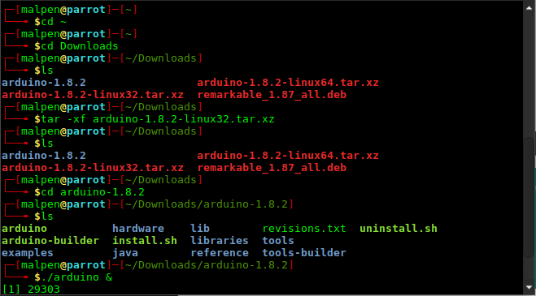
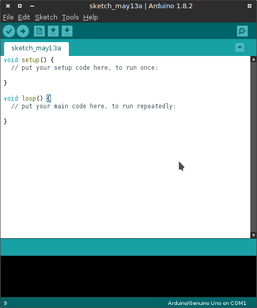
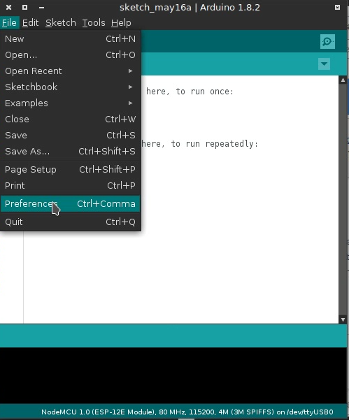
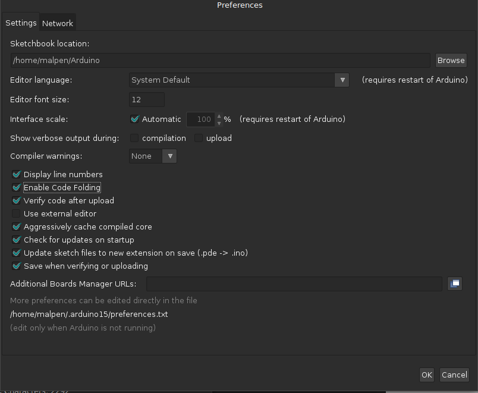
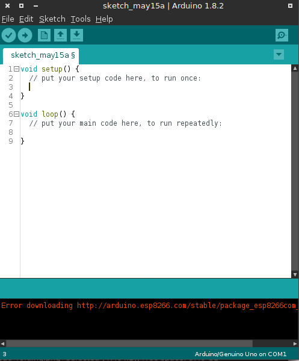

Arduino is an free software for electronics platform usually for MCU or SOC developemnet.
DO : Download Newest Version Arduino from Arduino official website
DON’T : Use apt-get install arduino # usually don’t work
Arduino Official Website : https://www.arduino.cc/en/Main/Software
Seem we using ESP8266 develop board instead of Arduino board so Arduino don’t earn any profit from us, please consided to donate to Arduino to thank for the great open soucres work.

Assuem your follow the step of choose GNU/Linux distro image as using 32bit GNU/Linux OS. So pick the 32bits for download. If amd64 go for Linux 64bits, Linux 32bits on amd64 may not work in my experiences.

Go to the directory where contain downloaded arduino file and extract the tar file then run in background.
cd ~
cd Downlaods
tar -xvf arduino-1.8.2-linux32.tar.xz
cd arduino-1.8.2
./arduino &

A basic Arduino program consist two part, a
setup()
part usually for setup pin configuration, a
loop()
part is the main part to place the extractly running code, this
loop()
scope, code will repeat the to run.

Option 1 : Enable the
Display line numbers
and
Enable Code Folding
in
File
->
Preferences
could give you better visiual feel when coding.



Option 2 : Enable the
Use external editor
to use any editor you want
use geany as a external editor, the arduino will sync the content while change and save in geany. Keep arduino running need the
Verify
and
Upload
functionality.

File->Preferences->Additional Boards Manager URLs->
Copy and Paste the follow link->OK
http://arduino.esp8266.com/stable/package_esp8266com_index.json
Sketch->Include Library->Manager Libraries
Wait for the udpate finish(the bar at bottom)
https://github.com/esp8266/Arduino
> Boards manager link: http://arduino.esp8266.com/stable/package_esp8266com_index.json
If your using other GNU/Linux distro except of Debian and already installed with Arduino but the pre-installed one is fail to run. Try remove /usr/bin/arduino and create a new soft link in /usr/bin/ name arduino
use
which
to find where the
ardino
local at, usr
rm -rf
delete the old
arduino
binary file,
ln -s
create soft link to in /usr/bin as
which arduino
/usr/bin/arduino
sudo rm -rf /usr/bin/arduino
sudo ln -s ~/Download/Arduino1.8.2/arduino /usr/bin/arduino
The preinstalled arduino in my parrot with Thinkpad X61s make my window x crash = =, so I remove the /usr/bin/arduino then create a soft link to the downloaded arduino